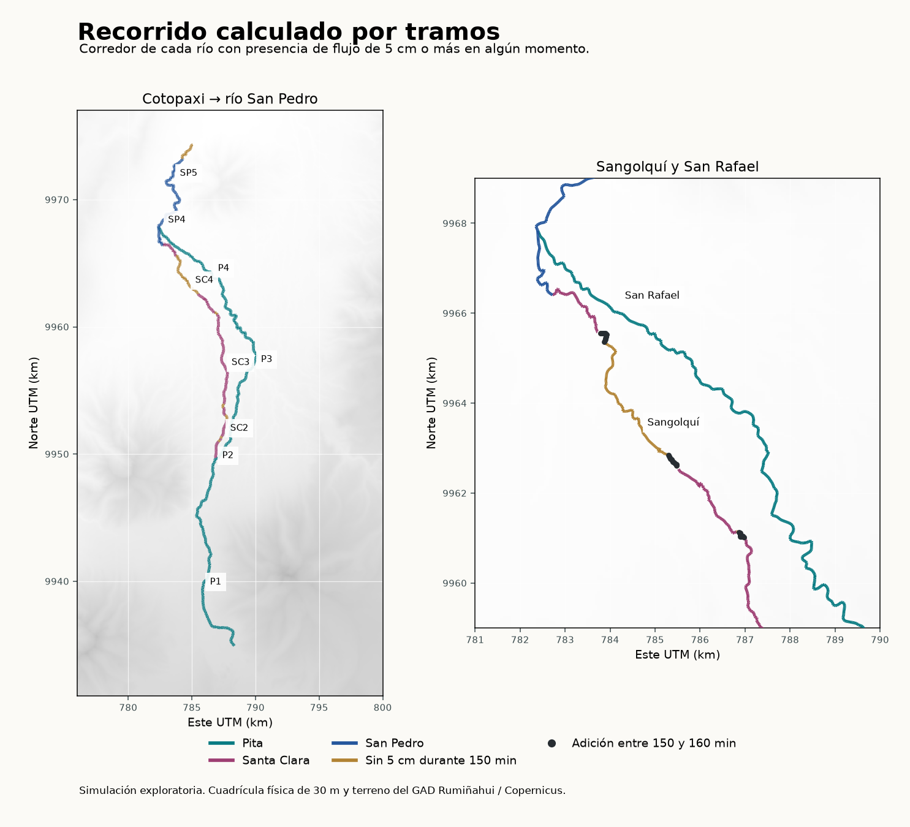

Nuestra estimación para el escenario calculado. El Pita mantiene continuidad hasta San Rafael y llega a la sección de Hacienda Megamaxi alrededor del minuto 102 desde los aportes simulados. En esa sección se calcularon máximos de 6,3 m/s (23 km/h) y 7,2 m de espesor. Son valores puntuales dentro de una sección del río y pueden ocurrir en momentos distintos.
Santa Clara sí puede afectar a Sangolquí. La corrida reproduce el desborde en La Caldera y parte del recorrido por Santa Clara. En el tramo urbano, el cálculo deja una brecha de 4,5 km a los 150 minutos. El mapa municipal, los mapas de la ESPE difundidos por GK y los antecedentes de 1877 muestran afectación en ese corredor. La evidencia disponible indica que el orden de llegada por los dos ríos puede cambiar según el escenario. Mapas de Oswaldo Padilla y la ESPE · Reconstrucción de 1877

Se midió cada cauce con muestras separadas unos 30 m y se verificó si alguna celda próxima alcanzó 5 cm de espesor. El porcentaje mide la longitud cubierta durante la corrida. Cerca de una unión, otra rama también puede mojar el extremo del tramo.
| Tramo | Longitud con flujo | Primera llegada al final Nuestra corrida | Fin del tramo EPN 2017, escenario 3 | Contraste cartográfico |
|---|---|---|---|---|
| Pita 1 | 100 % | 36,5 min | 17,7 min | Continuo en el cálculo y en el anexo EPN. |
| Pita 2 | 100 % | 58,5 min | 33,8 min | El cálculo y el anexo EPN muestran desborde en La Caldera. |
| Santa Clara 2 | 83 % | Sin llegada al final | 34,3 min | El cálculo deja interrupciones, incluida una de 418 m. El anexo EPN muestra continuidad en el sector. |
| Pita 3 | 100 % | 76,0 min | 53,2 min | Continuidad hacia el valle en el cálculo y en el anexo EPN. |
| Santa Clara 3 | 96,8 % | 105,0 min | 45,1 min | El cálculo presenta 224 m sin flujo al inicio. El anexo muestra un corredor más continuo. |
| Pita 4 | 100 % | 112,5 min | 79,8 min | El GAD y el anexo EPN también muestran un ensanchamiento cerca de San Rafael. Su coincidencia general no determina el borde exacto en calles. |
| Santa Clara 4 | 53,9 % | 115,8 min, desde la zona de unión | 66,8 min | GAD, Padilla y anexo EPN cubren la brecha urbana de 4,5 km. La aparición de flujo cerca de la unión no demuestra que cruzara esa brecha. |
| San Pedro 4 | 100 % | 120,8 min | 82,6 min | Ambos cálculos muestran continuidad aguas abajo de la unión. |
| San Pedro 5 | 77 % | Sin llegada al final | 99,8 min | El anexo EPN continúa por San Pedro. En esta corrida quedan 1,7 km finales sin flujo de 5 cm hasta el minuto 150. |
Los tiempos propios parten de nueve aportes simultáneos en el flanco norte. Los del EPN usan sus propias entradas, geometría y condiciones de flujo. Sirven para reconocer diferencias entre escenarios. Torres y Vásquez, tabla 4.4 · Mapas de los tramos 1–5
Se continuó el cálculo desde el minuto 150 hasta el 160 con las mismas fuentes, terreno y parámetros. El frente del lado sur avanzó unos 330 m y apareció flujo adicional desde el lado de la unión. La brecha bajó de 4,50 a 3,81 km con el umbral de 5 cm. Entre los kilómetros 5 y 7,5 del tramo urbano, el espesor máximo calculado siguió en cero. La prueba muestra que diez minutos adicionales no bastan para reproducir la continuidad que muestran los mapas. La causa del desacuerdo aún requiere comprobar el caudal desviado en La Caldera y la geometría local del cauce.
En la sección de El Ejido, el cálculo de 150 minutos quedó seco. El estudio local de Rivera (EPN, 2016) sí reproduce un flujo en la zona de esa sección en su escenario de calibración. En un punto cercano del escenario municipal, en UTM 17S 784698 E y 9963410 N, el servicio reporta cerca de 1,24 m de espesor máximo. Cada resultado corresponde a su propio escenario y ubicación. Rivera, 2016 · Capas del GAD Rumiñahui
La entrada consiste en 34,79 millones de m³ de agua liberados en 15 minutos. Kestrel calcula además el arrastre y depósito de sedimentos. Por una línea al sur de Sangolquí y San Rafael que cruza los dos corredores se estimaron 22,04 millones de m³ de mezcla en dirección norte durante 150 min. Ese volumen es el transporte a través de la línea y no mide cuánto material entra a las calles. El terreno municipal de 3 m se remuestreó a la malla de cálculo de 30 m. El cauce sumergido, las obras y la cantidad de flujo que se desvía hacia Santa Clara conservan incertidumbre.
Se trata de una estimación de escenario sin validación predictiva para una erupción futura. El mapa oficial y los avisos de las autoridades son las referencias para decisiones de emergencia.
Descargar muestras y verificación de la corrida · Consultar el informe del cálculo de 150 minutos